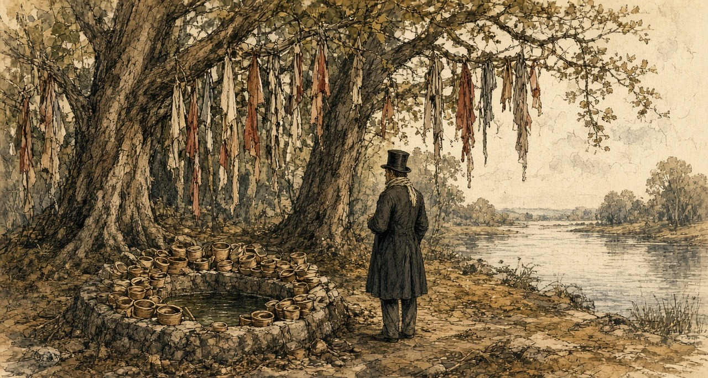
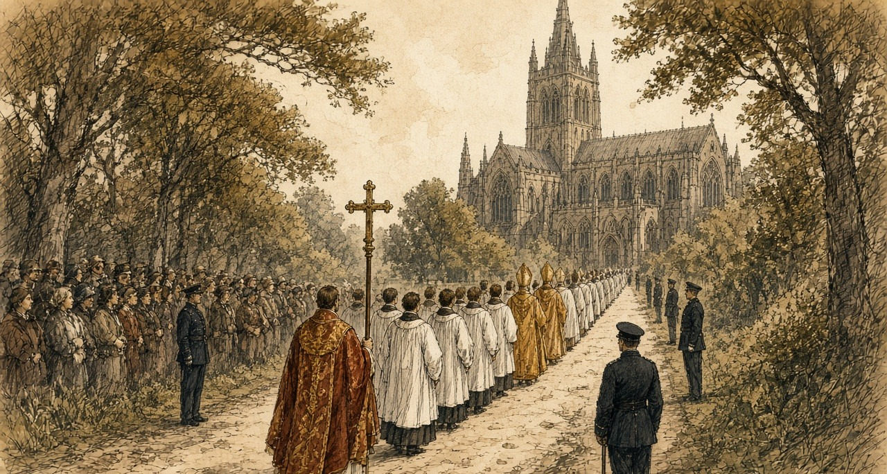
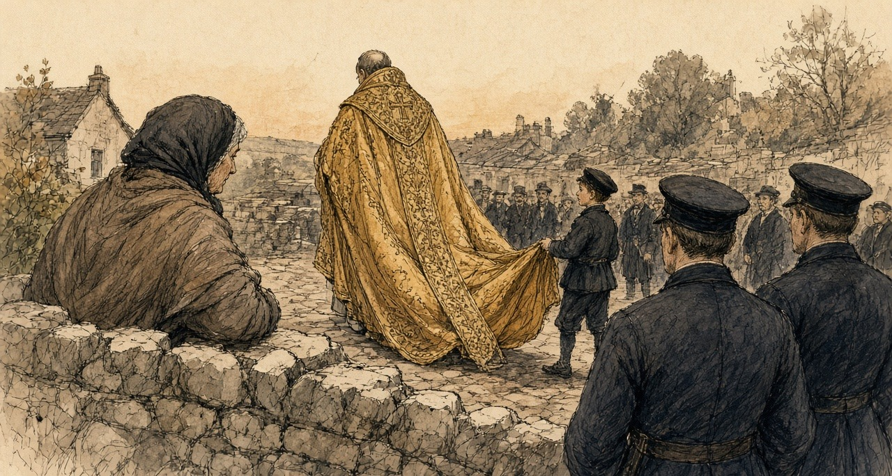
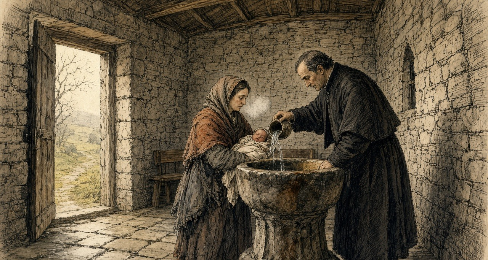
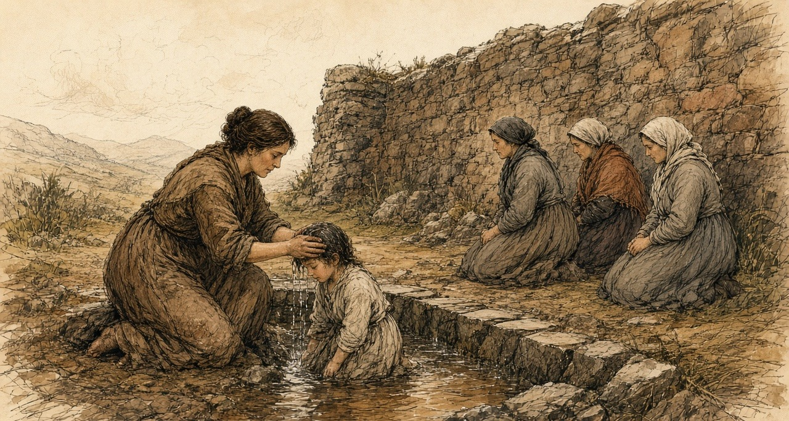
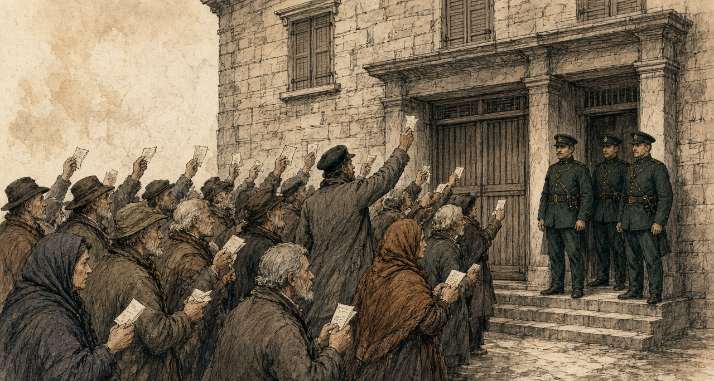
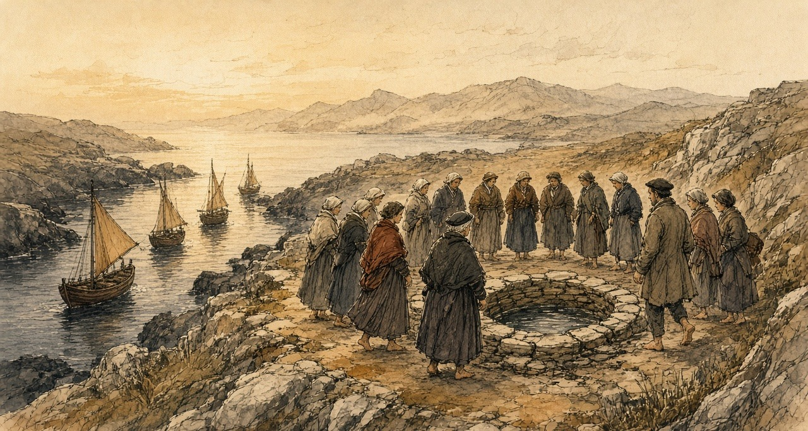

Chapter 12
Church Wells, 1850–1878
Castleconnell, Thurles, Tralee, Kilkenny, Errismore in Connemara, the Aran Islands and Dublin, 1834 to 1878
In the hay season of 1834 a travel writer named Henry Inglis hired a rowing boat at Castleconnell to take him up the Shannon to Killaloe. Before he went he walked out as far as a holy well dedicated to St. Senanus. He judged from what he saw that it was in high repute. Hundreds of little wooden vessels lay heaped in it and above it, left by the people who had come to drink. The trees that hung over the well were entirely covered with shreds of every colour, bits and clippings of gowns and handkerchiefs and petticoats. Among them he noticed some strings of beads, and a few locks of hair.

He thought he understood what they were for. "These, I believe, are the title-deeds to certain exemptions, or benefits, claimed by those who thus deposit them in the keeping of the patron saint, who is supposed to be thus reminded of the individuals whose penances might otherwise have been overlooked."
The inn at Castleconnell was beautifully placed and very moderate in its charges. For a very small house there, £10 a month was asked.
* * *
Thurles, county Tipperary, Wednesday, 21 and Thursday, 22 August 1850
The letter of convocation had been dated at Drogheda on 30 May, the feast of Corpus Christi, in Latin, over the name of Paul, Archbishop of Armagh, Primate of all Ireland and Delegate of the Apostolic See. He summoned every archbishop and bishop in Ireland to a national council at Thurles, in the buildings of the seminary, on the feast of the Assumption. On 6 August, from Drogheda again, he put it back a week, "ob graves causas," for grave reasons, to the 22nd.
The town filled. Every house in it and around it, the Illustrated London News reported, was occupied with visitors, and in many cases the barns had been turned into lodgings. On the Wednesday night it was almost impossible to find a place to lay one's head except at prices that, "in times like these, seem exorbitant." The paper counted the clergy of the surrounding dioceses, the priests who had come from the most remote parts of the country and the strangers from every direction, and put the applicants for a bed at not fewer than six hundred. The streets were crowded besides with people from the towns around and the peasantry of the neighbourhood.
By eight o'clock on Thursday morning groups of soberly dressed clergymen were walking towards the College. It was faced in cut stone. Inside, its halls and broad stone staircases were full of priests in surplice and soutane, some wearing the stole, and now and then a bishop went by in his robes with his train-bearers. When a great man came near, his name passed from group to group in a whisper.
Charles Bianconi had lent pictures from his collection, which the paper called one of the best in the country, to hang in the hall and on the walls of the cathedral. One was The Death of St. Francis of Assisi. The other was The Visitation. There were busts on pedestals, two of them of O'Connell.
At ten o'clock exactly the prelates gathered in the College oratory and the Veni Creator was sung. Then the procession came down the great stairs, out through the hall and along the broad path to the door of the cathedral, about five hundred yards. Police stood at intervals along the avenue and the road and in the cathedral yard to keep the crowd off. The bell in the cathedral tower tolled, and the choristers chanted the Litany of the Blessed Virgin.
A cross-bearer led, in crimson and gold. Behind him at least three hundred clergy walked two and two. Then the notaries and secretaries of the council, the archiepiscopal cross, the promoters, the procurators of absent bishops, the provincials of the religious orders, the mitred abbot of Mount Melleray, and the bishops in order of promotion, each with a chaplain and a mitre-bearer. Their vestments were velvet, brocade and cloth of gold. The mitres glittered with jewels. The laity came last.

All eyes went to the Primate. To the reporter Dr. Cullen seemed "the lowliest and meekest of that glittering crowd of dignitaries." His face was pale. His eyes were mostly cast down, the lids almost covering them. He was said to be not more than forty-five.
A throne had been built on the Gospel side of the sanctuary and covered in crimson damask and brocade. Cullen sang the High Mass of the Holy Ghost. The deacon sang the Gospel: "And at that time Jesus, calling together the twelve apostles, he gave them power and authority over all devils, and to cure diseases." Cullen read his allocution in Latin from his seat. The decree opening the council was read, and the bishops said it was agreeable to them. Cullen knelt towards the altar with his hand on the Gospels and made the profession of faith while everyone stood bareheaded, and then each prelate, and only a prelate, knelt before him, said the same words, and kissed the book.
The proceedings themselves were to be secret. No member would communicate with anyone outside while they lasted.
In the same column in which it announced the opening of the synod, the Illustrated London News printed a paragraph from the Limerick Reporter. "Nineteen houses were levelled, and 148 persons turned out roofless, last week, in a village called Ballagh, near Clonoulty, not far from Thurles."
* * *
A small farm in the parish of Thurles, August 1850
Strangers had the barn off us for the week of the Synod—two northern curates out of Armagh and the car-man that drove them—and they paid down what we asked without a word of bargaining, and threw in two shillings over the third morning came.
I scoured the place out myself on the Monday. I lifted the hens' roost down off the rafters and scattered two buckets of hot lime over the flags where the cow stood in the winter, and the sharp burn of the lime was up in my nostrils the whole week after. We gave them the clean wheatestraw on the Thursday, and I kept good rows of it, and the children and the two good blankets off our own bed, and himself and the childer and myself settled on the settle in the kitchen turf-turn.
I had the silver tied safe in the corner of my check apron going into Thurles on the Thursday, and I kept my fist closed round through the cloth, feeling the solid knock of it against my thigh at every step.
You could not stir a foot in Liberty Square for the crush. Outside-cars and gigs hub-to-hub from every parish in Munster, and the stallions rearing and roaring, and the horse-dung trodden into a butter underfoot, and balloiled-singers bawling, and gentlemen come over from the London papers. I, hoised myself up on the coping of the college yard wall with my sister's girl beside me, and a double line of the constabulary standing below with their broad backs pressed against our boots.
Then the great bell in the tower began to toll. You could feel the iron stroke of it jarring in your teeth. Out from under the lime-trees came the Latin singing, and then they came walking, two and two down the gravel—the white surplices over the black soutanes, more priests together than I think was in the four corners of Ireland—and then the bishops in their hem of train up off the gravel.
Gold. Solid cloth of gold on the backs of them. One old prelate passed right under the wall where my feet were hanging, and the cape on his shoulders was that crusted with gold bullion it swung stiff as a barn-door, and the kids in the jewells let off their wink firing in the sun, and a little acolyte in red holding the hem of his train up off the gravel.

My niece whispered that the small, dark-faced one at the end was Dr. Cullen, the new Primate that was forty years in Rome. I never got a sight of yes in his facial kit winking fine in the cathedral, the road to the cathedral door.
And while we were crushed there waiting on the blessing, a cattle-drover in the crowd behind was telling how the sheriff levelled nineteen cabins at Balilagh, out Clonclty, the week before, and turned seven score souls out into the gip of the ditch. A townsman in a good freeze coat turned round and told to him what hisMonth, today was not the day for it.
When I got back to the yard, the northern curates' driver was at the pump slicing the white road-dust off the wheels of the car, and he pitched each of the childer a bright copper halfpenny. Himself took the apron off me at the door, and took the counted and the silver shillings on the scrub-board twice over.
* * *
Thurles, August and September 1850
The council sat for three public sessions in the cathedral, and between them in private congregations. On the 29th MacHale, the Archbishop of Tuam, preached. The next day there was a requiem for the dead pastors of the church. The third and last session was on Monday, 9 September, before what the paper called an immense multitude of country-people round the cathedral. Three secretaries stood by the altar to witness the signing: Dr. O'Brien of Waterford, Dr. Cooper of Dublin and Dr. Leahy of Thurles. Cullen signed first. At the end it was announced that it was the wish and command of the Primate that none but the ecclesiastics taking part should leave the chapel before the procession.
The decrees were sent to Rome. The Congregation of Propaganda considered them at a general meeting on 28 April 1851, and the Pope confirmed them on 4 May, with some amendments, which the printed text set in italics. They were printed in Dublin in 1851, in Latin.
The decree on baptism said this. Because of the calamities of past times, the practice of baptizing in private houses had come into the country. In many places the custom could now be abolished without great inconvenience, and in those places, the bishops commanded, the sacrament was to be given in the churches from now on. Where an infant was in danger of death, or lived so far from a church that it could not safely be carried there, necessity did not allow the custom to be changed. Fonts were to be put up and kept in the parish churches as soon as possible.
At a baptism, by ancient and received custom, an offering was made to the priest. The custom was to stay. But no parish priest or curate was to strike a bargain over the offering before he baptized, and any priest who refused to baptize an infant because the offering was short or withheld was suspended by that act. No sacrament was ever to be refused because the offering had not been given. When the last anointing was given to the dying, no offering was to be asked at all.
Marriages, except in necessity or for some grave cause the bishop would define, were always to be made in the church. In each diocese where there was no such law already, the bishop was to make one by which the offerings customary at marriages were to be taken away altogether, or at least kept within just limits.
The priests were to keep regular days and hours every week to hear confessions in the public church. Besides the customary stations, they were urged to hold others, at least twice a year, in the parish church. The Eucharist could still be carried to the sick in their houses.
The priests were to flee public dances altogether, neither getting them up nor encouraging them in any way, and never to dance in private with women or in front of them. They were to keep away from public horse races and from any hunt carried on with great clamour, with horses and dogs. They were never to be seen at the theatre. They were to guard themselves against cards, at which much time was wasted and idleness fostered.
On holy days the people were to come to Mass, and to stop servile work. But the fairs that by old usage were held on feast days, the decree said, could not be prevented. The parish priest was to see that people busy at other business did not miss Mass.
He was to take particular care of the poor and the wretched of his parish. With those who oppressed them he was to deal with prudence and charity, and try to dissuade them from harassing the poor.
The bishops also knew of certain abandoned men, enemies of the Catholic Church, who in some districts of the kingdom were trying "pecunia, elargitionibus," with money, with handouts and with every kind of corruption, to draw away from the faith of their fathers the poorer Catholics who were afflicted by hunger and other calamities, and make them apostates, hypocrites, and sons of hell.
The decree on church property began with a definition. The goods of the church were nothing other than the vows of the faithful and the patrimony of the poor. Every parish priest was to make an inventory, at once, of everything movable and immovable that belonged to his church: the sacred vessels and furniture, any land, any parochial house or school, any permanent rent, and every charge on them. One copy went to the bishop's archive. Gold and silver vessels were to have the name of their church engraved on them. And lest for want of law the church's goods pass into other hands, the bishop was to see that their titles and deeds were drawn up accurately according to the civil law, in the names of three or four trustees, who were to meet once a year. Every bishop and priest was to keep a properly made and signed will. A priest who neglected it was to be deprived of the public prayers customarily said for him after his death, unless the bishop judged otherwise.
Two more matters came out of Thurles before the decrees did. The Cork Examiner's correspondent reported that the synod had passed a decree to found a Catholic university, and that every ecclesiastic in Ireland would be called on to pay two per cent of his income a year towards it. And the Austrian Government had placed £3,200 at the disposal of the synod for the relief of the distressed poor of Ireland. It was divided £1,200 to Munster, £1,200 to Connaught, and £800 between Leinster and Ulster.
On 7 September, at Thurles College, the Archbishop of Cashel, Michael Slattery, answered a letter from the Under-Secretary, Sir Thomas Redington, telling him that the Queen had appointed him a Visitor of the new Queen's College at Cork. "It is obviously impossible for me, as a Catholic bishop, to accept of any situation whatsoever in connexion with those institutions."
* * *
The chapel, Thurles, the spring of 1851
The others were christened at the fire. The priest came to the house for the station and the neighbours came in, and the child was done there on the table with the cloth on it, and the water warm out of the kettle.
This one had to go to the chapel.
She was four days old. There was a frost on the ruts. I had her inside my shawl against my skin, and the godmother walking beside me, and every step the cold coming up through my feet and into the bad place where she came out of me. I was bleeding yet. I could feel it warm and then cold.
I kept my mouth on the top of her head the whole road. The smell of her. I was counting her breaths against my neck, to know they were there.
The chapel was colder than outside. Stone. You could see your breath in it. They had a font now inside the door, new, and the water in it was not warmed. When he poured it on her she opened her mouth and nothing came out of it at first, and then she roared, and her whole body went stiff in my arms like a board, and blue at the lips.

I have the sound of that in my two ears yet.
The godmother gave him what we had brought, wrapped in a bit of paper. He did not open it in front of us. He put it in under his coat.
Going home I ran. I did not mean to, but my legs ran, with my hand flat over her through the shawl. Himself had the fire built up to the chimney when I came in the door. I sat down in front of it with her and opened myself and put her to the breast, and she would not take it, and would not take it, and then she took it.
* * *
Tobar na mult, near Tralee, county Kerry, 1855
On 17 November 1855 a Dublin monthly called the Catholic Layman printed a letter about holy wells, signed Humphrey Leary. The Catholic Layman was a Protestant paper, and its pages argued against the Church of Rome. Its editor had said he wished to hear more about the holy wells. Leary wrote that he had visited a few of them often since he was a boy, in company with many others who went out of curiosity to see so many people praying.
Three miles from Tralee and two from Ardfert, he wrote, was Tobar na mult, which he translated Weather's Well. Thousands of both sexes went there, of every age, from every corner of Ireland. The blind and the lame went, the deaf and the dumb. Those who could not go themselves had their rounds given for them by somebody else.
At the north-east end of the field stood the holy well, which some called the great well. It had a high wall round it and was kept locked, and was opened only for the pilgrims. A pilgrim paid sixpence to wash in it and went down to it by stone steps. Those who could not pay washed in the stream that ran out of it, for nothing. They were told that no benefit came from it without paying, and bathing in the great well, where a trout lived that was the saint of the well and was seen once in seven years by some favoured worshipper.
"You cannot imagine the eagerness with which the water is drank; although, while it is being handed round, more than one diseased person is washing in it in a state of nudity."
* * *
Tobar na mult, the same year
Three long days of the mountain road were we walking it, and lay we down among the heifers in a stranger's byre the last night.
Is no hearing in the two ears of her since the scarlet fever. Seven years of rising the sun, the way a sheep-dog watches the hand of his master, and is not a Christian work in her mouth, ach a small wild noise she makes in the back of her gullet. Is for it her sake i walked the stones.
Stands a high stone wall around the Great Well, taller than the head of a man, and a timber door in the face of it, and a bailiff of a keeper sitting by the steps. He stretches out the palm of his hand, and lays the pilgrim the white sepoxence in, and shores the bolt to let you go down the stone steps to the water. Heard i the splashing within, and the short gasping of the sick people as the chill of the spring struck their hearts.
Wore four copper pennies and a halfpenny knotted in the tail of my shawl. Had i counted twenty times since we passed Tralee.
Untied i the knot and held i the coppers out to him on the flat of my hand. Looked he down at the money. Looked he at the child. Spoke he to me in the Irish: Tán an sruthán thíos—ní cosc ar bith ar an sruthán (is the outflow stream below, you is no hindrance on the stream). And then cried he out in a loud railway voice over my head, so the whole queue of the people waiting with their sixpences would hear, that there was neither cure nor grace in the overflow—that it was down inside the locked well the blessed trout was swimming, where the Saint left the virtue.
Runs the waste water out from under the foundation stones in a narrow gripe, and is the bank around it trodden into a black bog-mire by the knees of the poor. Stripped i the flannel shirt over their head. Was the trembling on her. Were the small knobs of backbone standing out through the white skin like a string of horn-buttons. Set her down in the running gutter to her waist, and scooped i the ionic water up in my hollowed hand to her waist, and scooped i the icy water.

A woman beside me was drinking out of her two hands from the same water. Above us, a man with sores all down his legs was sitting in it, naked.
I cannot tell you the cold of it on my arms. They were dead to the elbow.
After, we went round. Round the old tree and round the little cabin, and up the mound to the altar, on the knees, three times, and the stones cutting the knees, and the child crying going round behind me. There are three pictures of stone set into the altar, and they are sweating, they say, always sweating. You kiss each one nine times and you rub it nine times with your right hand, and then you rub the hand on the part that is sick. I kissed them. They were wet and cold and they tasted of other people's mouths. I rubbed my hand on them and put it over her two ears and held it there.
I said the prayers on my fingers, for I have no beads. You begin at the small finger of the left hand.
Beyond in the tents there was a piper, and then a fiddle, and the smell of drink, and they were starting the dancing. She turned her head to it.
She turned her head.
I took her face in my two hands and turned it back to me. I said her name. She was looking at my mouth.
* * *
Thurles, February 1856
On 1 February the Tipperary Joint Stock Bank published its report to the shareholders. It said the bank was flourishing. It declared a dividend of six per cent, with a bonus, carried £3,000 and upwards to the reserve fund, which it said now stood at £17,000, and put the assets of the company at £100,000. James Sadleir, the member of Parliament for the county, was its sole manager and director. His brother John, the member for Sligo, was its founder.
On the Saturday evening before his death, John Sadleir was handed a telegraph message addressed to him at the Reform Club in Pall Mall, from James Sadleir, at 30 Merrion Square in Dublin. "All right at all the branches, only about a few small things refused here. If £20,000 to £30,000 over here on Monday morning, all is safe."
At Carlow the manager of the branch paid out all the cash he had in hand up to three o'clock, and then suspended payment. The event, the Illustrated London News reported, caused "consternation, especially among the agricultural classes, many of the better rank of farmers being depositors to a considerable amount."
John Sadleir was found dead on Hampstead Heath on the morning of Sunday, 17 February. The bank stopped payment.
* * *
Thurles, February 1856
It was a man going home from the fair at Templemore that told it at the door. He said there was a crowd at the bank since morning and the shutters up on it.
Himself was gone to Cashel with a load. I put on the shawl.
The money was there since the time of the synod. The strangers' silver, and the price of two heifers, and what we kept back out of the butter for six years. Every bit of it. Himself said it was safer there than the thatch, with a fire, or a robber. The bank was the Sadleirs, he said, and the Sadleirs were our own, and members of Parliament.
There was a paper they gave him for it. I had it in my breast inside my clothes, and I could feel the corner of it against me the whole road, scratching.
Before I came to the square I heard them. It is not like any noise of a fair. It is lower.
They were packed against the door, men and women, and the police at the front of them, and the shutters up on every window. A man was hammering the door with the flat of his hand, the same, and the same, and the same, and nobody stopping him. A woman was down on the flags on her knees. I knew her. She had the stall of eggs. She was not crying. She had her hands in her lap and her mouth open.

I pushed in. I do not know what I was going to do. I had the paper out in my hand and I was holding it up over my head, and I saw other people holding up the same papers, white, all over the crowd, like a flock of something.
Somebody was reading out of the newspaper at the back. Stopped payment. Stopped payment.
My legs went. I did not fall. A man held me up by the arm, a man I did not know, and he said nothing to me and he did not let go.
I came home in the dark and I did not light the candle. I sat with the paper on my knee. When himself came in from Cashel he stood in the door and looked at me, and he knew it from my face before I said it, and he went back out into the yard and I heard him walking up and down it, up and down, until the cock crew.
* * *
Dublin and London, March 1856 to February 1857
On Tuesday, 4 March, the Master of the Rolls in Dublin heard a petition to wind the bank up. The court was crowded with people who had an interest in it. He read out the report of 1 February, with its assets of £100,000. He did not think the assets would come to £35,000. James Sadleir had allowed his brother to overdraw £200,000, and the bank was a defaulter to the amount of £400,000. The paper reported his judgment: "a fraud of so gigantic a character that no living being had ever seen anything like it." The company was to stand dissolved from that day. No solicitor with any connection to James Sadleir was to be appointed.
The Annual Register for the year set down who had lost. "Not only were the depositors in the South of Ireland — chiefly small farmers and tradesmen — defrauded of their whole savings, but the shareholders were stripped, for the most part, of every farthing they possessed." On the strength of the report of 1 February a considerable number of people, most of them widows, spinsters and half-pay officers, had bought shares and lost all they had. Attorneys bought up debts owed by the company and sued them. Some declared themselves insolvent. Others disappeared and went to the United States with whatever they could get together.
On 4 July 1856 a warrant was signed at Dublin Castle for the arrest of James Sadleir, for conspiring to defraud Her Majesty's subjects "of divers sums of their monies by false representations of the accounts and circumstances of the Tipperary Joint Stock Banking Company." Inspector Jonathan Whicher of the London detective force looked for him and found no trace. The sub-sheriff of Tipperary searched and reported that Sadleir had no residence left in the county. His goods had been sold by the official manager of the bank. An attorney swore that he was believed to be in Sweden or Norway.
On 16 February 1857 the House of Commons debated whether to expel him. John Arthur Roebuck, the member for Sheffield, said the charge against him was a charge against a man's morality: "You have picked the pockets of thousands of poor people; you are a thief, you are a swindler; in the eyes of all honest men you are a degraded creature." He went on. "Would not an honest man rush to meet such a charge?" James Sadleir was expelled the House.
The bank's affairs were not finished a quarter of a century later. On 12 August 1881 the official manager advertised for 647 creditors whose dividends had never been claimed, and printed every name. A barrister, W. Neilson Hancock, Q.C., worked out what they were owed: £3,000 between them, less than £5 each on the average. Fifty-three of them were near Thurles. Unless they applied before the following January, with proof of who they were, the money would be paid into the Chancery Division, and from there, under an Act of 1867, it would lapse to the Suitors' Fee Fund, and under changes then coming, to the Imperial Exchequer. Hancock's paper was about the cost of proving the wills of the dead and taking out administration for them. Wills could be proved in only twelve towns in Ireland. For a dividend this small, the proving cost more than the money.
* * *
Kilkenny, Errismore and Aran, 1856 and 1857
Through 1856 the letters about wells kept coming in to the Catholic Layman.
One, in March, signed "An Eye Witness," said that St. John's Well, four miles from Kilkenny, was still resorted to on the patron day by numbers of sick and infirm people, who bathed in it and drank the water. Two years before he had been there the day before the pattern, while men were damming the stream that ran from it to make a ford for the next day. There were fish in the water, and the visitors asked why nobody caught them. "Is it eat holy fish?" was the reply. His companion asked whether, if it was a sin to eat the holy fish, it was not as great a sin to drink the holy water. The men made no reply and went on with their work.
Another correspondent, in the same number, wrote from a district that had a holy well on the island of Inishglora. If a man or a child or a beast fell sick, somebody was sent off at once for a bottle of water from a holy well. Wells were visited for every purpose there was, he wrote, and "sometimes they are enjoined by the priest by way of penance."
In August a long letter came from Connemara. On 12 November, the writer said, great crowds gathered at Tobar Caileen, the well of St. Caileen, in Errismore, some from upwards of thirty miles away. Early in the morning sails could be seen coming in towards the place. The people were mostly barefoot. They had eaten nothing since the night before. They came up to the well silent. Each one blessed himself, said the Lord's Prayer, and went round the well from east to west, walking or on bare knees, saying seven Hail Marys, and the Creed on coming back to the start. Seven times. Then he sprinkled himself with the water, and the station was done.

Tents were up nearby, where refreshment could be had by anyone who could pay for it, and by noon there was poitín and ale and rum, and singing, and dancing to the pipes and the fiddle. Matches were made. Some couples went off together. Men who had old scores to settle settled them there, with fists and sticks and stones, "so that bloody noses, cut heads, broken limbs, and bruised bodies are the result of these proceedings."
Into St. Kieran's well, he wrote, some people threw rolls of butter, so that their cattle would be fruitful and give good butter the next year. Others took the butter out again, believing it would increase their own milk, and left in its place a halfpenny, or a bad penny, or a button, or a small round stone.
It was coming home from the station at St. Caileen's well the November before, he wrote, that a Roman Catholic priest had been found dead on one of the mountains of Rosmuc.
In September 1857 a member of the British Association wrote in from the Aran Islands, where the ethnological section had gone the week before. The wells were almost all dry. St. Eney's well near Teampull Bheanáin and St. Brecan's were still hung thick with rags and scraps of cloth. One of the scientific gentlemen carried away a long sprig of a holy bramble with no fewer than six of the rags tied to it.
On the same page the Catholic Layman reprinted an advertisement from the Tablet newspaper of 29 August for Barff and Co. of London, religious statuary. For Christmas, figures for the crib: St. Joseph, four feet eight inches high, the Blessed Virgin kneeling and the Infant reclining to match, all coloured like life, 15 guineas. For Lent, a set of Stations, quite new, alto relievo, painted like life, in decorated wood frames, £10. A figure of the dead Christ, six feet long, coloured after nature, in the new composition, 8 guineas. A Virgin and Child, life size, enriched with gold, 9 guineas. A pair of kneeling adoring angels a foot high, 30 shillings the pair, or 15 shillings each. Brackets in stock to suit the statues. The figure of any saint modelled life size to order.
* * *
Dublin, 1852 to 1878
In 1852 Cullen was moved from Armagh to Dublin, to succeed Archbishop Murray. In 1866 the Pope made him a cardinal. He took for his title the church of St. Peter in Montorio in Rome, where the exiled earls of Tyrone and Tyrconnell were buried.
He died on 24 October 1878 at his house in Eccles Street, in his seventy-sixth year. The Illustrated London News printed his portrait from a photograph and an obituary. He had been born on 29 April 1803 in the parish of Ballytore in county Kildare, and went to Shackleton's school there, where Edmund Burke had been a pupil. He had studied at Carlow and in Rome and been rector of the Irish College. In 1849 the Pope chose him for Armagh, although he was not one of the three names that Ireland had sent. He was "not distinguished either as a preacher or a writer." The paper listed what he had left behind: churches, hospitals, convents, orphanages and asylums, the diocesan college at Clonliffe, the Catholic University and the Mater Misericordiae Hospital. During what it called the Fenian excitement, "despite of popular clamour, and at the risk of personal odium, he rendered the British Government infinite service."
On the Sunday his body was taken from Eccles Street to the cathedral in Marlborough Street, through a large crowd. It lay in state on a catafalque until Tuesday. Every Catholic bishop in Ireland came to the requiem except two, the Archbishop of Tuam and the Bishop of Cork. The Archbishop of Tuam in 1850 had been MacHale, who preached at Thurles on 29 August.
In the evening they buried him, privately, at Clonliffe College.
Important names
- Cullen, Paul (7 mentions in this chapter): Archbishop of Armagh (later Dublin) who sang the High Mass at the Thurles synod of 1850 and became a cardinal in 1866.
- Sadleir, John (mentions in this chapter): Tipperary Bank founder whose death on Hampstead Heath and the bank's stoppage emptied depositors around Thurles.
- Sadleir, James (mentions in this chapter): Brother who telegraphed from Dublin before the collapse and later faced arrest and Commons expulsion proceedings.
- MacHale, John (2 mentions in this chapter): Archbishop of Tuam who preached during the Thurles synod.
- Hancock, W. Neilson (2 mentions in this chapter): Statistician who wrote on Tipperary Bank depositors and the cost of proving small wills in Ireland.
- Leary, Humphrey (2 mentions in this chapter): Correspondent whose 1855 letter on Tobar na mult described the locked well near Tralee and Ardfert.
- Inglis, Henry (1 mention in this chapter): Travel writer who hired a boat at Castleconnell in 1834 and described Shannon pilgrimage tokens.
- Slattery, Michael (1 mention in this chapter): Archbishop of Cashel who answered Under-Secretary Redington from Thurles College in September 1850.
Sources
- H. D. Inglis, Ireland in 1834. A Journey throughout Ireland, during the Spring, Summer, and Autumn of 1834, 2 vols (London, 1834), vol. I, pp. 318–20, "Castle Connell": the holy well of St. Senanus; the wooden vessels; the shreds of gowns, handkerchiefs and petticoats; beads and locks of hair; "the title-deeds to certain exemptions"; the inn and the £10 asked for a small house; the boat to Killaloe in hay season. Internet Archive copy irelandin1834jou001ingl.
- Decreta Synodi Plenariae Episcoporum Hiberniae apud Thurles habitae, anno MDCCCL (Dublin, 1851). Internet Archive copy decretasynodiple00cath. The letters of convocation, Drogheda, 30 May 1850 (Corpus Christi; "in aedibus Seminarii"; 15 August) and 6 August 1850 ("ob graves causas"; 22 August); the rescript of Propaganda, Rome, 23 May 1851 (general meeting 28 April; papal confirmation 4 May; emendations in italics); Decretum de aperienda Synodo (22 August); De Sacramentis, arts. 5 (no sacrament refused for want of offerings), 7 (baptism in private houses introduced "ob praeteritorum temporum calamitates"; to be in churches; exceptions for danger of death and distance), 8 (fonts in parish churches), 12 (baptismal offerings retained; no bargaining; suspension latae sententiae), 23 (the Eucharist kept for the sick), 46 and 48 (weekly confessions in the church; stations in the parish church twice a year besides the customary stations), 52 (no offering at extreme unction), 57 (marriages always in the church; offerings removed or limited); De Fidei Periculis (proselytism "pecunia, elargitionibus"; "apostatas, hypocritas, et filios gehennae"); De Vita et Honestate Clericorum, arts. 4–9 (intemperance; public dances; horse races; noisy hunting; theatres; cards); De Parochis (feast-day Mass; "Nundinae ... impediri non possunt"; the poor and their oppressors); De Bonis Ecclesiasticis, arts. 1–7 ("vota fidelium, et patrimonia pauperum"; inventories; engraved vessels; titles "juxta legem civilem" in the names of three or four trustees; wills; loss of suffrages); the Elenchus Decretorum and the signatures, beginning with Cullen and including Michael, Archbishop of Cashel.
- The Illustrated London News, 24 August 1850, "Ireland": "Roman Catholic Synod" (barns turned to lodgings; strangers; the hierarchy of four archbishops and twenty-three bishops; secrecy; the opening on Thursday) and "Evictions" (Ballagh, near Clonoulty, nineteen houses, 148 persons, from the Limerick Reporter). 7 September 1850 ("Austrian Subscription for the Irish Poor," from the Evening Post: £3,200; the division by provinces). 14 September 1850, "The National Synod at Thurles," with engravings (the six hundred applicants for beds and the prices; the College and the hall; Bianconi's pictures and the busts of O'Connell; the procession of 22 August, the police, the bell and the litany; the order of the procession and the three hundred clergy; the vestments; the description of Cullen; the throne; the Mass and the Gospel; the allocution, the opening decree and the profession of faith; the second session of 29 August and MacHale's sermon; the requiem; the third session of 9 September, the secretaries O'Brien, Cooper and Leahy, the signing, and the Freeman's Journal on the procession leaving first); the same issue, "The Queen's Colleges" (Slattery's letter, Thurles College, 7 September 1850) and "New Roman Catholic University" (the Cork Examiner's Thurles correspondent; two per cent of clerical incomes).
- The Catholic Layman (Dublin), vol. IV, 17 November 1855, "Holy Wells," letter signed Humphrey Leary (Tobar na mult near Tralee and Ardfert; the wall, the lock, the sixpence, the steps; the stream "gratis"; the trout; the eager drinking and the naked bathers; the old tree and the cabin; counting from the little finger of the left hand; the mound and altar; three rounds on bare knees; the three sweating stone pictures kissed and rubbed nine times; the tents, pipes, fiddle and dance). Vol. V, 15 March 1856, "St. John's Well," signed "An Eye Witness" (the damming of the stream; "Is it eat holy fish?"), and "Popular Superstitions" (bottles of well water for the sick; stations "enjoined by the priest by way of penance"; the well on Inishglora). Vol. V, 15 August 1856, "Connemara Holy Wells" (Tobar Caileen in Errismore, 12 November; the sails; barefoot and fasting; seven rounds; the tents and drink; the fights, "bloody noses, cut heads, broken limbs, and bruised bodies"; butter in St. Kieran's well and the halfpenny, bad penny, button or stone; the priest found dead on the mountains of Rosmuc). Vol. VI, 17 September 1857, "Holy Wells of Arran," signed "A Member of the British Association" (dry wells; the rags at St. Eney's and St. Brecan's; the bramble carried away), and "Images" (Barff and Co.'s advertisement from the Tablet of 29 August 1857, quoted with its prices). JSTOR Early Journal Content, via the Internet Archive (jstor-30066040, 30065897, 30065925, 30066699).
- The Illustrated London News, 1 March 1856 (the Carlow branch of the Tipperary Bank and its cash paid out to three o'clock; "consternation, especially among the agricultural classes"; the inquest on John Sadleir; the telegraph message from James Sadleir, 30 Merrion Square, to John Sadleir, Reform Club, handed to him on the Saturday evening); 8 March 1856, "The Tipperary Joint-Stock Bank" (the Master of the Rolls on the winding-up petition: the report of 1 February 1856, £100,000 and £35,000, £200,000 and £400,000, the six per cent dividend, £3,000 to a reserve of £17,000; "a fraud of so gigantic a character"; dissolution; no solicitor connected with James Sadleir).
- The Annual Register ... of the Year 1856 (London, 1857), Chronicle, February (the depositors "chiefly small farmers and tradesmen"; the shareholders, "widows, spinsters, and half-pay officers"; the suits, insolvencies and flights to the United States). Internet Archive copy s25id13212520.
- Papers relating to Mr. James Sadleir, HC 1857 (Return to an Order of 13 February 1857): Sir Richard Mayne's report of 11 February 1857 and Inspector Whicher; the warrant of H. W. Thompson, Dublin Castle, 4 July 1856; the report of Thomas Kemmis, Crown Solicitor, 12 February 1857; the letter of Samuel M. Gason, sub-sheriff of Tipperary, 6 February 1857 (no residence; goods sold by the official manager); the affidavits in Carroll v. Kennedy and Hickie v. Scully (Sweden or Norway). Internet Archive copy op1248075-1001.
- Hansard, HC Deb 16 February 1857, vol. 144, cc. 702–21, "James Sadleir, a Member of this House. Motion that he be expelled this House": Roebuck ("You have picked the pockets of thousands of poor people"); the expulsion. Hansard's people index gives James Sadleir's seat as Tipperary, 7 July 1852 to 16 February 1857.
- W. Neilson Hancock, "The Depositors in the Tipperary Bank, and the Cost of Proving Wills and distributing small Assets in Ireland," Journal of the Statistical and Social Inquiry Society of Ireland, vol. VIII, part lix (January 1882), pp. 302–9: the advertisement of 12 August 1881; 647 names; £3,000; less than £5 each; nine branches and 53 creditors near Thurles; the deadline of January 1882; the Act of 1867, the Suitors' Fee Fund and the Imperial Exchequer; the twelve towns for proving wills; the cost of administration. Trinity College Dublin repository (TARA).
- The Illustrated London News, 2 November 1878, Obituary, "Cardinal Cullen," with portrait from a photograph by the London Stereoscopic Company (death on 24 October at Eccles Street; birth 29 April 1803, Ballytore; Shackleton's school and Burke; Carlow and Rome; the rector of the Irish College; Armagh in 1849 and the three names; Dublin in 1852 after Murray; cardinal in 1866, St. Peter in Montorio and the earls; "not distinguished either as a preacher or a writer"; the institutions; the Fenian rising; the removal to Marlborough Street; lying in state; the bishops absent; the private burial at Clonliffe in the evening).